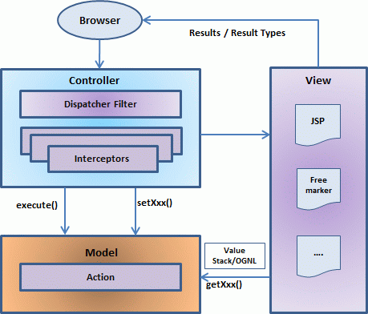

从高层面来看， Struts 2 是一个纯粹的 MVC (或MVC2)框架，Struts 2使用以下的五个核心部分来实现 Model-View-Controller(MVC) 模式：
- Actions
- Interceptors
- Value Stack / OGNL
- Results / Result types
- View technologies
概述
相比于传统的 MVC 框架， Struts 2 略有不同， 这是因为Struts 2中的 action更多的是扮演model的角色， 而不是 controller,虽然这其中有一些重叠的地方。

上面的图描述了Struts 2架构中的Model, View和Controller。controller由Struts 2的dispatch servlet filter(Servlet分发过滤器) 和 interceptors(拦截器)，actions实现Model, 视图view由result types 和 results 实现。值栈(Value Stack)和 OGNL 提供通用线程，链接和启用其他组件之间的集成。
除了上述的组件外， 还有大量的关于配置的消息(information)， 对Web 应用程序的配置， 对actions的配置，以及interceptors,results等等的配置。
Request 生命周期
基于上面的图，我们可以了解到在Struts 2工作流中的用户请求的生命周期是这样的：
- 用户向服务器发送一个资源(例如: 页面)请求；
- Struts 2 的 Dispatcher Filter 拦截请求，并选择合适Action；
- 执行已配置的
interceptors(拦截器)的功能， 例如： 表单验证，文件上传等； - 基于请求操作，调用并执行已选择的
action； - 同样，如果需要，配置的拦截器可用于进行任意的后期处理；
- 最后，将由
view准备的结果(result)返回给用户。